"The austere serenity of Shangri-La." describes James Hilton in hi s 1933 novel, Lost Horizon, "allured by a land of milk and honey in a hidden valley in the Himalayas."
Over the years, this has led edgy explorers to venture deep into the Himalayas, scouting valleys after another, finding their own perceptions of a paradise on earth. For some, this search brings them to Arunachal Pradesh.
Arunachal Pradesh, due to the state's easternmost location on the map of India, is called "the land of dawn-lit mountains". The entire terra firma falls under the eastern Himalayan landscape, a land of supreme natural beauty and rich ancient traditions. The altitudinal and climatic variation of the state results in a variety of landscapes and forests which harbor one of the planet’s last great biodiversity.
Even today, many villagers in the state have to trek for days to reach the nearest grocery shop. This separation due to geographical extremities has ensured the preservation of a great diversity of ages-old cultures, flora, and fauna found in the nine river systems. Arunachal Pradesh is definitely the wildest frontier of India!
Travel Map
Travel Plan
Tawang Monastery – India’s largest Buddhist monastery.
Sela Pass – High-altitude pass with stunning views.
Ziro Valley – UNESCO Heritage Site famous for Apatani culture.
Namdapha National Park – Spot rare wildlife like red pandas.
Trekking & Camping.
Gorichen Peak Trek – One of the toughest treks in Northeast India.
Dibang Valley – A remote paradise for nature lovers.

 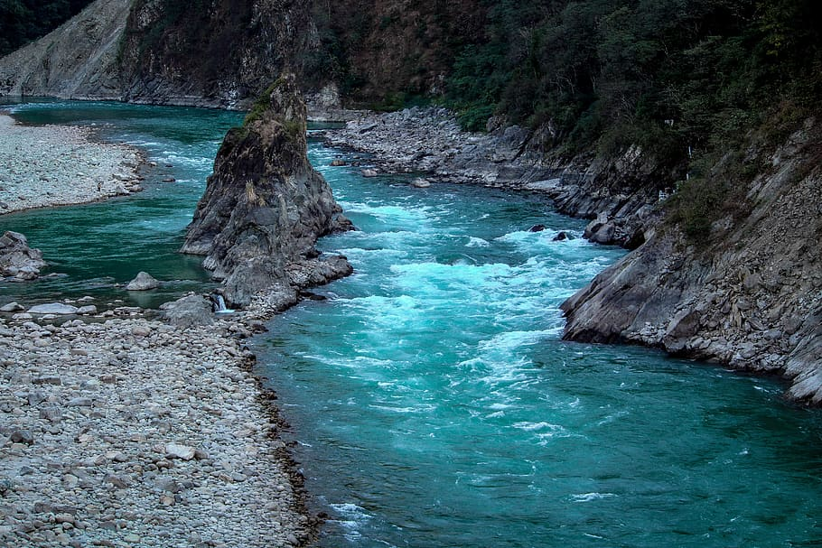
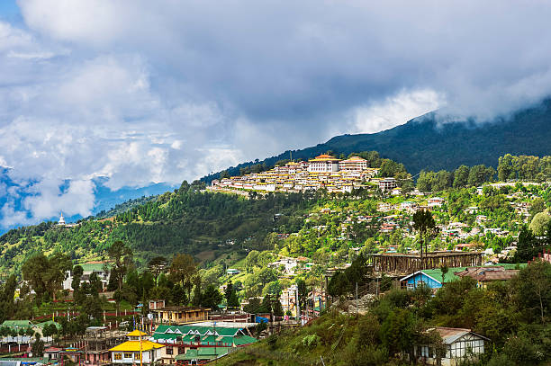
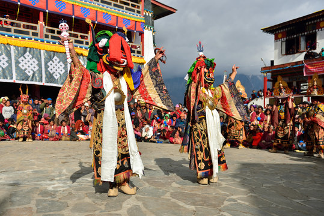
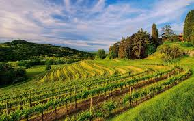
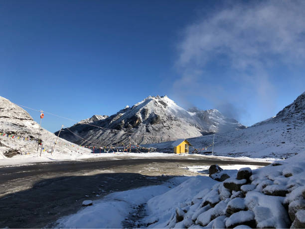
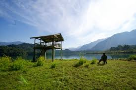
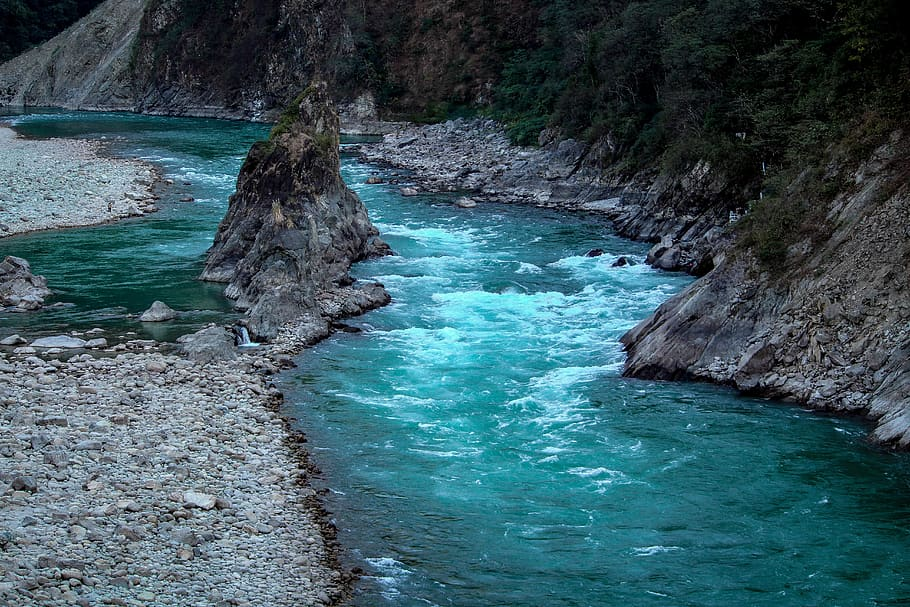
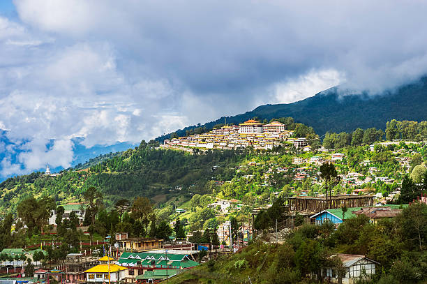
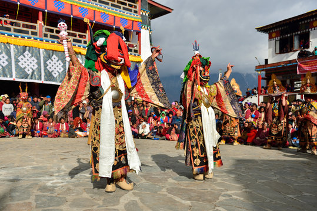
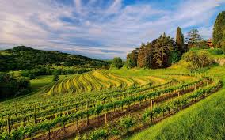
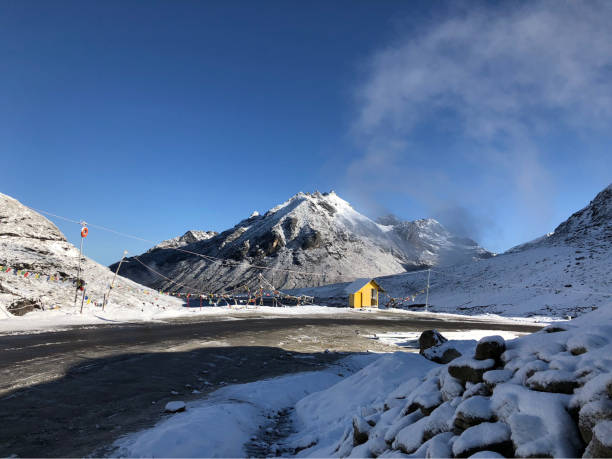
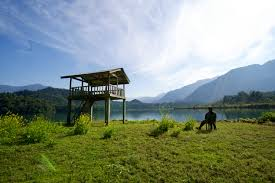